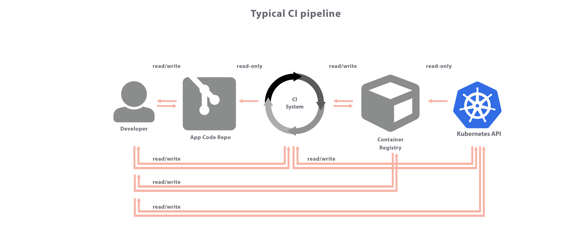
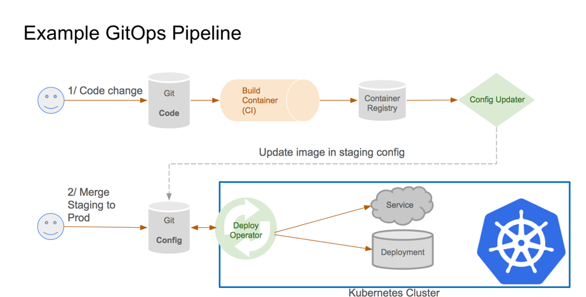
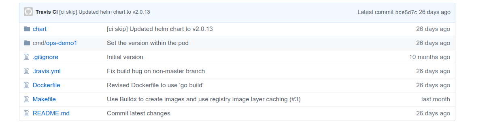
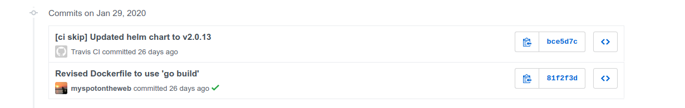
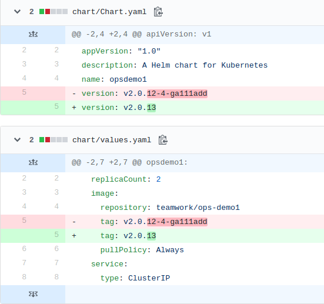

$ kubectl get application ops-demo1 -oyaml | yq r - spec.source
helm:
values: |
ingress:
hostname: ops-demo1.us.teamworkops.com
opsdemo1:
replicaCount: 3
config:
HELLO: "world"
HOLA: "mundo"
path: chart
repoURL: git@github.com:Teamwork/ops-demo1.gitArgo deploy yourself
See the movie?
What is GitOps?
Describe your desired software system as files stored in git
An agent ensures the live system is the same as the state in Git
History of GitOps
First published by Weaveworks

What do you need for GitOps?
Git repository
Agent
Kubernetes cluster
Other useful stuff
Manifest generation tool
CI system
Web UI
Benefits of GitOps
Single source of truth
Security, compliance and auditing
Developer centric
Trivializes rollback
Declaritive
Observable - detect configuration drift
Velocity
How does GitOps actually work?
CI/CD

Git commits are signals
Build triggered by commit to Code repo
Deployment triggered by commit to Config repo
Separate repos? (In the beginning maybe)
Code + chart in same repo?

This is how we started
Commit history

Commit changes

[skip ci]
Review pipeline again
Application fragment
Best practices
Two repos: One for code the other for deployment
Chose the right number of deployment repos
Test your manifests before you commit
Git manifests should not change to to external influences
Plan how you’ll manage secrets
Thought this talk was about Argo CD?

Tour of the UI
SSO enabled
Multi-tenanted
Visual map of application components
Status
Inspect Yaml and logs
Delete objects
Change app settings
Demo: Build and deploy
Commit a change and watch it get built and deployed
Credits